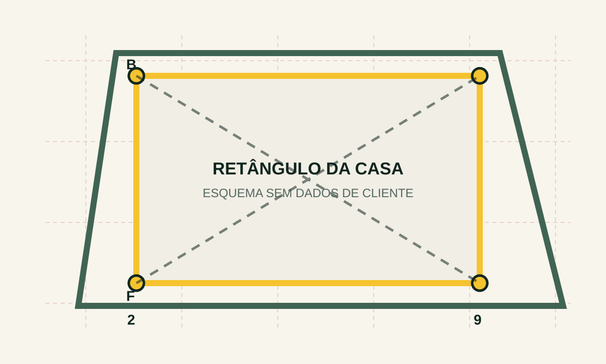

LER NA OBRA
FUNCIONA SEM INTERNET
EDR ESQUADRO • OBRA
PRANCHA 03 • REVISÃO 00 RETÂNGULO DA CASA11,12 × 7,16 m
DIAGONAL CORRETA13,23 m
BC
AD
NOVO FLUXO • SEM CONTAS NA OBRA
Prepare a locação no escritório. No canteiro, basta ler o QR e digitar as duas diagonais medidas.
Envie o PDF executivo. Nesta rodada, o sistema identifica e confirma a prancha de locação.
LEITURA DEMONSTRATIVA
Prancha de locação
PDF ANALISADO • 14 PÁGINAS
Antes de procurar a casa, o sistema confirma que escolheu a página e a revisão corretas.
CASA IDENTIFICADA
O amarelo envolve somente a construção. O formato do lote ficou fora da conta.

FICHA DE CAMPO
Não é necessário criar outra prancha. Você pode imprimir este carimbo ou salvá-lo junto da obra.
EDR ESQUADRO • OBRA
PRANCHA 03 • REVISÃO 00 RETÂNGULO DA CASAAPONTANDO PARA O CARIMBO…